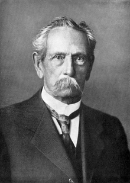
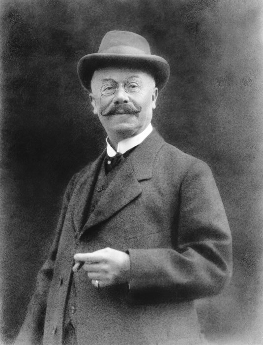
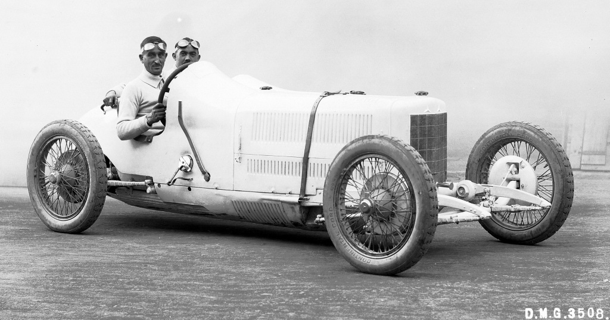
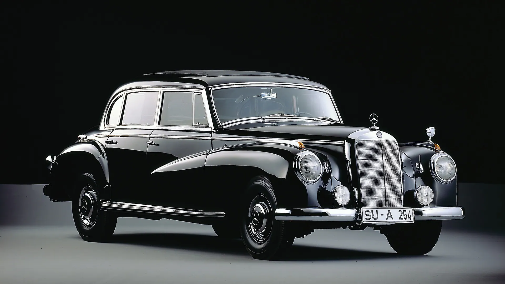
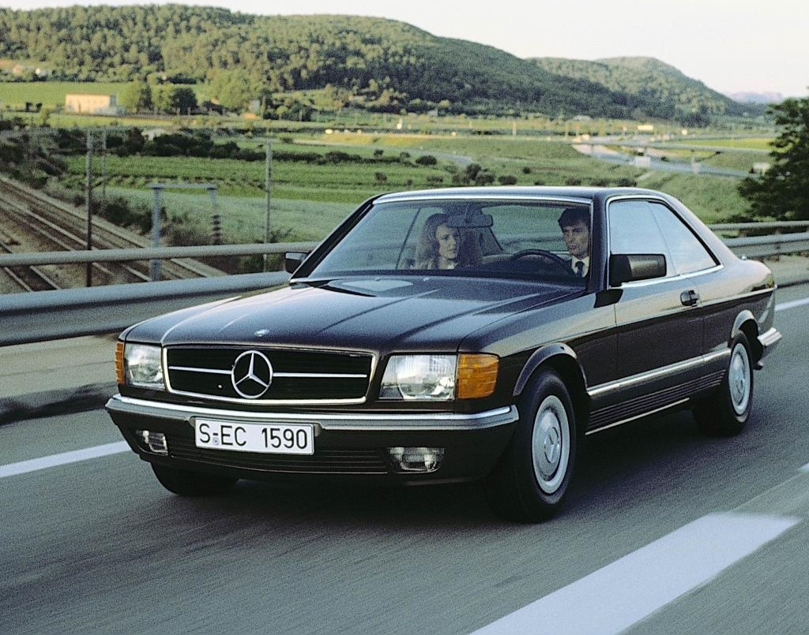
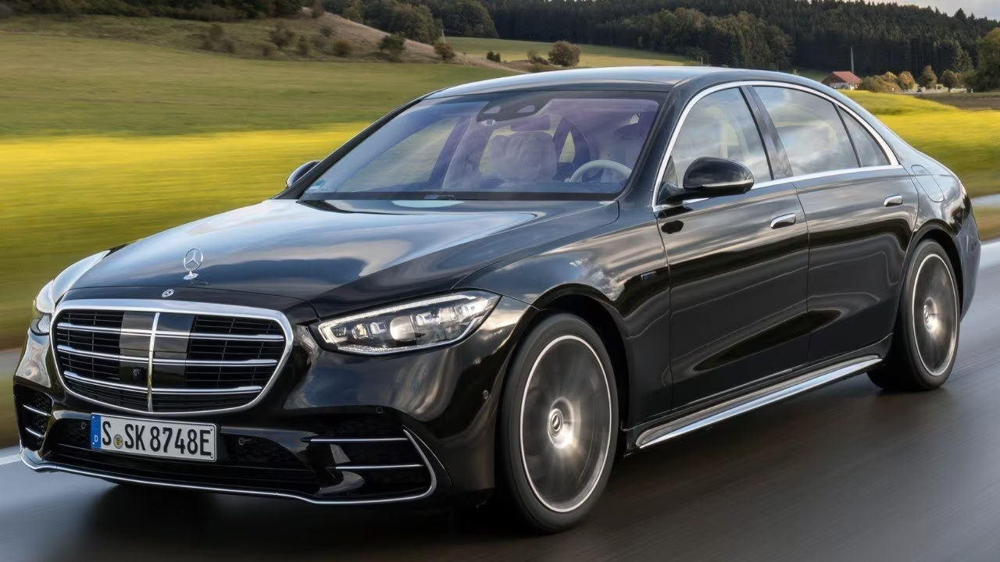

Die faszinierende Geschichte von Mercedes-Benz beginnt im späten 19. Jahrhundert mit den bahnbrechenden Erfindungen von Karl Benz und Gottlieb Daimler. Diese Meilensteine in der Automobilgeschichte legten den Grundstein für die Gründung der Daimler-Motoren-Gesellschaft(DMG) im Jahr 1890.
Der Name "Mercedes" tauchte erstmals 1901 auf, als Erik Jellinek, ein visionärer Autohändler, DMG überzeugte, ihre Fahrzeuge unter diesem Namen zu vermarkten. Dieser Schachzug verlieh der Marke einen Hauch von Luxus und Eleganz. Mercedes-Benz etablierte sich schnell als Synonym für erstklassige Fahrzeuge.
Die Fusion von Benz & Cie. und DMG im Jahr 1926 führte zur Gründung von Mercedes-Benz. Diese Vereinigung stärkte die Position des Unternehmens und schuf eine kraftvolle Allianz. Die Marke setzte ihren Erfolg mit der Produktion von High-End-Fahrzeugen und Rennwagen fort.
Während des Zweiten Weltkriegs richtete Mercedes-Benz seine Produktion auf militärische Fahrzeuge aus. Die Nachkriegszeit brachte Herausforderungen mit sich, die das Unternehmen überwinden musste, um sich neu zu organisieren und seinen Weg fortzusetzen.
Die 1950er und 1960er Jahre waren geprägt von technologischen Fortschritten. Mercedes-Benz führte wegweisende Sicherheitsinnovationen ein und baute seinen Ruf für Qualität und Zuverlässigkeit international aus. Die Marke expandierte erfolgreich und stellte sich neuen Herausforderungen.
In den 1980er Jahren festigte Mercedes-Benz seinen Ruf als Hersteller von Luxusfahrzeugen. Die Einführung der S-Klasse setzte neue Maßstäbe für Komfort und Technologie. Die Marke erweiterte ihr Portfolio um Geländewagen und Sportwagen, und Luxus wurde zu einem zentralen Element ihrer Identität.
Im 21. Jahrhundert konzentriert sich Mercedes-Benz auf die Zukunft der Mobilität. Elektromobilität, autonomes Fahren und nachhaltige Technologien stehen im Fokus. Die Marke bleibt bestrebt, Innovationen voranzutreiben, um den sich wandelnden Anforderungen der Automobilbranche gerecht zu werden.
